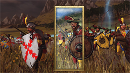
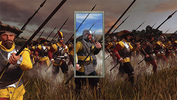
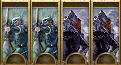
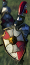

Unit Card Guide
By Cataph
Why
Hello, my name is Cataph and I am a cardoholic.
You made a new unit and you need a new flashy unit card. Simple. No, it ain’t. Unit cards are probably the unit’s component you will be staring at for the majority of the time, even more than the actual variant. Get it wrong and it can be an eyesore for the entire campaign and battle.
A good unit card will:
- blend in with other vanilla pieces
- show the unit’s appearance
- display, possibly, its character and gear and role
What
But first things first.
A unit card is a 60x130 PNG. Don’t make it larger than that or it will automatically be compressed in-game and lose more quality than if you did it yourself.
Its location is ui/units/icons, and it’s a good idea to open the data.pack and extract that folder for future reference. Its name needs to be the same in the card column in the unit_variants table.
In units/info you may find a version with a larger “shredded frame”, this is however only used in loading screens, so ignore that unless you need those for promo or stuff like that.
How
You can use stuff like GIMP or Photoshop to assemble a unit card. Personally I use the latter so I will use its lingo. Making nice cards is not easy. During the transition between Rome2’s and Warhammer’s art style I made truly horrendous cards myself, but with time I noticed things and developed some tricks.
Most CA cards are similar to existing GW artwork, but are still made by a proper artist. I am surely not one, but you’ll want to respect these factors:
- Positioning of the portrayed unit: not too zoomed in, not too far away; varies with races too (notice how Empire cards tend to have a western knee-cut, Dwarfs a full body).
- Lighting: CA cards are generally good luminosity, low contrast but with drawn highlights. This is important, you don’t want your card to be a confused blob.
Before we get to the chase, get this template! Always periodically test with the card frame on top, I used to get immensely pissed off when important details of my card got hidden by the UI. You will never see the entire card in the game, especially on ranged units due to the additional ammo bar. Remember to hide the frame again when you’re done. It’s a PSD file, but should work just fine in GIMP too.
The Three Jedi Ways
[please don't use the sampled pictures without permission]
- THE ARTWORK. You grab a legal* and beautiful artwork around, and tweak it until it fits and shines. Usually the quickest method, but it requires a good sample. Example below, for my Skullreapers, based on this artwork.
{kind=link}

- THE MONTAGE. You grab parts from existing CA cards and glue them together. This may look simple but it’s actually an excellent way to get god-awful cards, because each bloke in a card may have its size, positioning and lighting, and mixing them may not work like you’d think. You don’t want your card to look like the portrait of the Frankenstein’s Monster, or too samey with the neighbouring unit. Working examples: below for my Estalian Lancers, or this infopic by not-a-spoon.
{kind=link}

- THE PHOTOSHOOT. You take things in your hands and start taking screenshots of the unit in-game. This can be a lengthy process, especially for cavalry and ranged units, but can be quite satisfying and produce a faithful portrait of the unit. It’s my favourite and most used method, and the one I’m going to describe. This is also where Positioning and Lighting really come to play.
* Remember that you can't use non-WHFB stuff and if fan-art, you want to check/ask permission.
Guide to the Photoshoot
First off you need to take a good screenshot in which the unit comes with a good pose, possibly no animation glitches and clipping. As said, you need something that will fit in a 60x130, so some photography experience may come in handy.
Here are two examples that can give you an idea of how to crop and photoshop a battle screenshot and what the final result can potentially look like.

These two blokes are Estalian reskins for Swordsmen and Spearmen. As you can see, the pose needs to fit in a quite longilineal frame, so not all stances will work and also why cavalry is more difficult. You want to show at least part of the body and weaponry. Protip! Use a better camera mod and the >N< key high-detail camera for better screenshots.

Usually you will want a decent lighting, so no early dawn or cloudy battles. You can still make those work but it’s harder. For these guys I wanted a sunny look instead of the gloomy Empire cards.
The beginning may be as simple as auto-tuning Luminosity and/or Tone to remove weird tints. Afterwards you want to reduce contrast (by a lot, even up to 100!) and probably still increase luminosity (otherwise they are likely going to look quite bleak in-game). Test in custom battle selection until it’s not a grey blob anymore.
Then comes the holistic and complicated part.
Protagonism: the bloke must be instantly distinguishable from the background. Selecting them and making them a separate layer is always a good idea. Afterwards you may further lighten or darken the background stuff. Blurring also works but I usually don’t like it, it can look too fake. Giving it a minimalist oil paint touch can also help.
Background: when you have extra time and experience in your hands, you may want to add smoke, happy clouds, grim clouds, that sort of thing, behind the protagonist’s layer. Can look really cool.
Contours: this is the secret recipe and why we lowered contrast. We said CA cards are artworks, and they have visible dark contours to highlight parts. So we start drawing them (1-2 pixel width) with medium hardness brush or pencil in black and white in a new layer. Usually it looks good when it’s set as Soft Light, probably between 60 and 100% opacity, tweak at will. Contours can make a huge difference between a flat icon and one that can blend in with vanilla ones. Examples (Empire Archers and Teutogen Guard) without and with contour:

The cards were already heavily-engineered, but you can still notice an improvement. In any case, you will still check how the card looks in custom battle (where it’s extra tiny) and in the following loading screen. Sometimes it will suck so hard that it’s back to the drawing board, but that’s ok.
For a true step by step tutorial I’m gonna need a fresh unit card project. Stay tuned.
Consolation prize, my first and terrible unit card for WH1, versus the same unit in WH2:


APPENDIX: Character Icons
Characters want their portraits too, of course. Their cards are kept in ui/portraits/units/(designated culture) and are quite simpler to make. You follow the Photoshoot method, fix the tone, lower contrast, increase luminosity, and bam, done. Except that you want to use that faction’s face-to-frame size ratio to make it look better next to the other heroes and lords. For example Empire characters tend to be more zoomed-out, whereas Vampires have a creepier and closer portrait (you can recognize a bloodsucker by their selfies). Making that stuff actually work in campaign is done by following the binning guide.